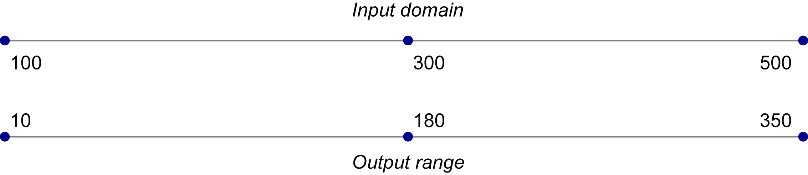
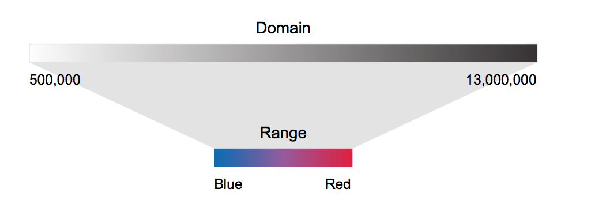
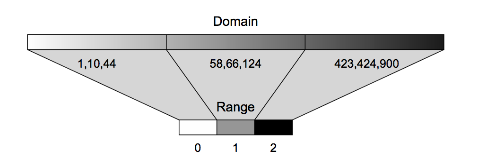
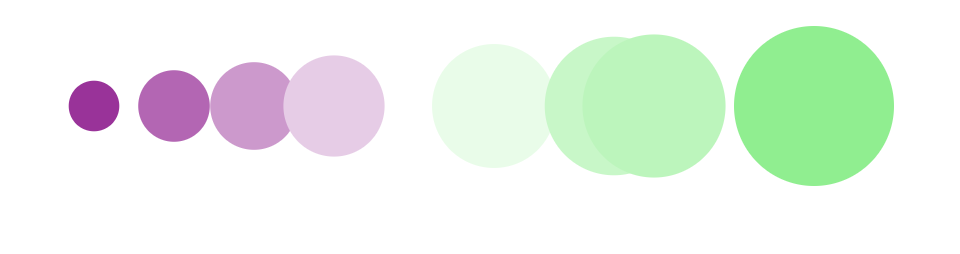
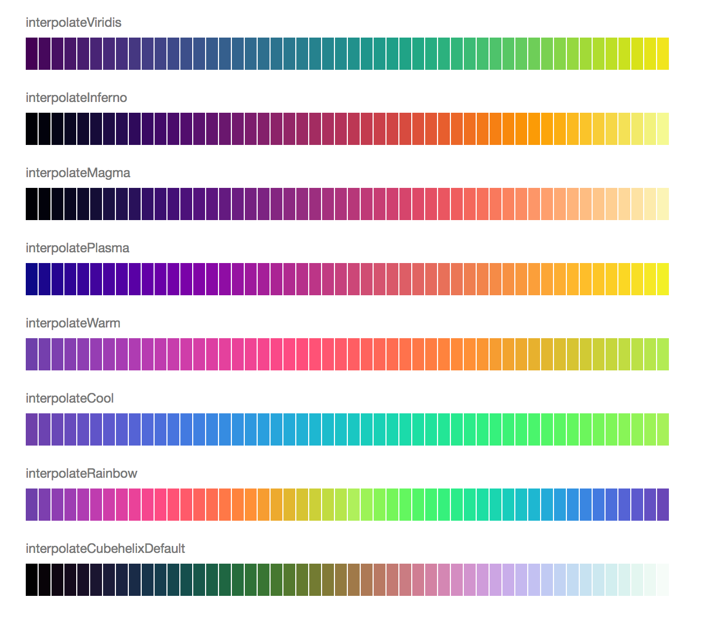

scale缩放也叫比例尺。是可视化的基本，使抽象的数据，转换成可视化的代表，比如宽高，位置或者颜色等。
输入 & 输出
scale缩放，其实是一种mapping。
将输入的数据转换成对应的想要的输出的数据形式。
既然是转换，那就需要输入和输出。
输入是放入domain函数的参数。
输出时放入range 函数的参数。

妙记 ID OR
其实每个scale函数返回的都是函数，需要的参数就是数据。
先举几个基本例子：
人口范围50万-130万 对应 输出长度为 500像素范围。
12345var newRamp = d3.scale.linear().domain([500000,13000000]).range([0, 500]);newRamp(1000000); // return 20;说明，人数为100万时对应长度为20像素newRamp(9000000);newRamp.invert(313); // 知道像素长度313px，想知道他对应的人口数。人口范围50万-130万 对应 输出颜色 蓝色-红色
123456var newRamp = d3.scale.linear().domain([500000,13000000]).range(["blue","red"]);newRamp(1000000); // return #ad0052;说明，人数为100万时对应颜色newRamp(9000000);newRamp.invert(#ad0052); //NaNinvert适应于输出为数字的比例转换。- 示意： 
离散型，将一组数据分为三类
12345var sampleArray = [423,124,66,424,58,10,900,44,1];var qScale = d3.scale.quantile().domain(sampleArray).range([0,1,2]);qScale(423); // 2qScale(20); // 0qScale(10000); //2- 示意：
scale 分类
按照我个人的偏好分类如下：
- 输入输出都连续[linear, power, log]
- 输出离散[quantize scale]
- 输入输出都离散[band, point]
- 颜色相关[顺序比例尺(),categorical color scale,]
- 时间相关[scaleTime 属于连续型]
输入输出都连续
- scaleLinear
- scalePower
- scaleLog
- scaleSqrt
- scaleTime
scaleSequential
后两个单独做解释。
线性scaleLinear， 没什么可说的，就是输出与输入呈线性相关。y = ax + b幂指数scalePower，输出与输入的幂指数呈正相关。y = m * x^k + b平方根缩放scaleLog，就是幂指数中k = 0.5。关于这个，一般用于使用面积来表达数据值的大小时。所以该scale函数的结果可以作为r的值。对数缩放scaleLog， 输出与输入的对数呈正相关。y = m * log(x) + b参考代码：d3-practice
关于连续型的缩放，还有其他几个参数：
Clamp()：控制当输入超过range的情况。默认是false，如果超过range，则会自动按比例换算成domain以外的值。设为true则会严格控制结果在对应的domain中。Nice()：主要用在使用真实数据来设置range的时候，d3.extent(data)会自动读取min&max作为范围。但是如果作为坐标轴，可能数据看起来不是很好看，设置成nice()它会自动向上取整。invert()：可以根据给出的输出值，来计算输入值。【注意】：domain必须是数字类型的range: 支持多个value。同时domain也要输入多个参数。相互为边界，实现缩放。例子：（见下面的多段缩放）12345678910111213141516171819202122// 位置缩放const firstScale = d3.scaleLinear().domain([0, 10]).range([0, 400]);// 面积缩放const sqrScale = d3.scaleSqrt().domain([0, 10]).range([0, 40]);// 多段缩放const fourthScale = d3.scaleLinear().domain([0, 5, 10]).range(['purple','white', 'lightgreen']);canvas.selectAll('.fourthScale').data(testData).enter().append('circle').attr('class', 'fourthScale').attr('r', d => sqrScale(d)).attr('cx', d => firstScale(d)).attr('cy', 200).attr('fill', d => fourthScale(d));
结果如下：
输入连续，输出离散
scaleQuantize,输入可以是连续范围，输出是离散的值，在range中规定。输入会按照输出数组的长度n分成n份。调用的时候，根据输入判定落在那个区间内，就输出对应的range中的值。
例子:1234567var quantizeScale = d3.scaleQuantize().domain([0, 100]).range(['purple', 'pink', 'lightgreen']);quantizeScale(10); // returns 'purple'quantizeScale(30); // returns 'purple'quantizeScale(90); // returns 'lightgreen'scaleQuantile，与上面类似，但是输入可以是随机的数组，d3会主动将domain中的数组排序，然后按照range的参数长度n来将排序后的输入分成n组，然后，按照下标值将domain内容均分，然后分别对应range中的内容。（当数量不均分时，可通过
quantileScale.quantiles()查看边界分类）。 例子：1234567891011121314151617181920212223var myData = [0,4,6,9,10];var linearScale = d3.scaleLinear().domain([0, 100]).range([0, 600]);var quantileScale = d3.scaleQuantile().domain(myData).range(['lightblue', 'orange', 'lightgreen']);console.log(quantileScale.quantiles()) // [4.666666666666666, 8]d3.select('#wrapper').selectAll('circle').data([0, 3,5,6, 7, 8, 9,10, 20]).enter().append('circle').attr('r', 3).attr('cx', function(d) {return linearScale(d);}).style('fill', function(d) {return quantileScale(d);});scaleThreshold，将domain中的数据映射到range中的颜色或者离散值。其实domain规定的数据的门限值，就是range中范围的分界点。domain中的数组长度要比range的少一位，这样才能将所有数据包含。看例子：
12345678var thresholdScale = d3.scaleThreshold().domain([0, 50, 100]).range(['#purple', 'lightblue', 'orange', '#red']);thresholdScale(-10); // returns '#purple'thresholdScale(20); // returns 'lightblue'thresholdScale(70); // returns 'orange'thresholdScale(110); // returns '#red'
输入输出都离散
scaleOrdinal，domain和range规定的内容是一一对应的。如果range长度不够，则重复range。如果输入的数据布在domain中，则会将range中的第一个值赋给他。这个可以通过设置
.unknown('xxxx')来自定义。scaleBand，domain规定每个band的值，range中规定整个柱形图的长度，也就是多个柱子和间隙的总和。当输入数据时，会返回对应的柱子的宽度以及起始位置。柱子宽度通过
d3.scaleBand().bandwidth()bandwidth() 柱子宽度
paddingInner() 每个band间的距离
paddingOuter() 第一个子band前面的padding和最后一个子band后面padding 之和。
常用在柱形图，条形图中。自动生成柱子和间隙的位置。
scalePoint，按照给出的domain将range范围分为对应的n-1份。两边的间隔可以通过
d3.scalePoint.padding()来计算。而间隔的值可通过step()获取一般输入输出都离散，常用在坐标轴，颜色中。
颜色相关
scaleSequential
这个和线性的类似，只不过range是不能配置的，而是通过interpolator()来对应的。其中，插值函数是接收0，1之间的输入，输出两个数字，颜色或者字符之间的插值。
这个一般用于热力图等关于颜色的计算中，而且d3规定了一些内置的颜色插值。代码参考
如下图：
category Scales 用于 scaleOrdinal中
根据预置的颜色集合，生成具体的颜色块。更多颜色参考：https://github.com/d3/d3-scale-chromatic
使用方法：123456789const color = d3.scaleOrdinal(d3.schemeCategory10);...canvas.selectAll('.test').data(testData).enter().append('circle').attr('class', 'test').attr('fill', d => color(d));
时间相关
scaleTime
时间格式输出，参考：https://github.com/d3/d3-time-format